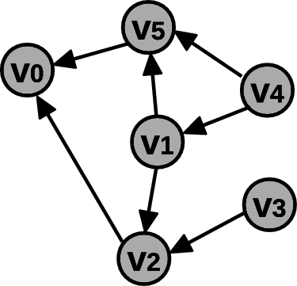
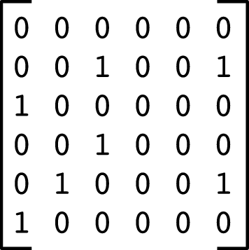

| Fig.1 | Fig.2 | Fig.3 |
|---|---|---|
|  |  |
Primeiramente vamos considerar uma camada de abstração
utilizando o conceito matemático de grafos.
Um grafo orientado, ou grafo dirigido, G(V,A) é
definido pelo par de conjuntos V e A, onde:
Um caminho no grafo
é uma sequência de vértices adjacentes (de cada um dos
vértices existe uma aresta para o vértice seguinte).
O comprimento do caminho é o número de arestas que o caminho usa.
No nosso problema, o caminho é uma sequência de cidades,
interligadas por vias diretas, a partir de uma cidade de origem
até uma cidade de destino.
A importância do uso da abstração por grafos reside no fato de que muitos problemas provenientes de diversas áreas podem ser tratados com o uso de algoritmos comuns em grafos, permitindo o reaproveitamento do código.
Para resolver o problema dos caminhos de menor comprimento a partir de uma cidade de origem, considere o arquivo de código abaixo contendo a implementação de uma fila usando listas ligadas circulares.
| Arquivo: fila_lig.c | ||
|---|---|---|
|
1 2 3 4 5 6 7 8 9 10 11 12 13 14 15 16 17 18 19 20 21 22 23 24 25 26 | /* Numero de cidades consideradas */#define N 6void Comprimentos(int A[N][N], int orig, int C[N]) { Fila f; int i,j; f = CriaFila(); for (i = 0; i < N; i++) C[i] = INT_MAX; C[orig] = 0; InsereFila(&f, orig); while ( !FilaVazia(f) ) { i = RemoveFila(&f); for (j = 0; j < N; j++) { if (A[i][j] == 1 && C[j] == INT_MAX) { C[j] = C[i] + 1; InsereFila(&f, j); } } } LiberaFila(f);} |
1 2 3 4 5 6 7 8 9 10 11 12 13 14 15 16 17 18 19 20 21 22 23 24 25 26 27 28 29 30 31 | void Caminho(int A[N][N], int orig, int dest, int C[N], int P[N]) { Fila f; int i,j; f = CriaFila(); for (i = 0; i < N; i++) { C[i] = INT_MAX; P[i] = -1; } D[orig] = 0; InsereFila(&f, orig); while ( !FilaVazia(f) ) { i = RemoveFila(&f); if (i == dest) break; for (j = 0; j < N; j++) { if (A[i][j] == 1 && C[j] == INT_MAX){ C[j] = C[i] + 1; P[j] = i; InsereFila(&f, j); } } } LiberaFila(f);} |
1 2 3 4 5 6 7 8 9 10 11 12 13 14 15 16 17 18 19 20 21 22 23 24 25 26 27 28 29 30 31 32 33 34 35 36 37 38 39 40 41 42 43 44 45 46 47 48 49 50 51 52 53 54 55 56 57 58 59 60 61 62 63 64 65 66 67 68 69 70 71 72 73 74 75 76 77 78 79 80 | #include <stdio.h>#include <stdlib.h>#include <limits.h>/* Numero de cidades consideradas */#define N 6/* Para utilizar as funcoes de manipulacao de fila presentes no arquivo fila_lig.c */typedef int TipoDado;#include "fila_lig.c"/* Inserir nesse ponto o código das demais funções anteriores */int main() {/* A[i][j] indica se existe caminho direto da cidade i para a cidade j.*/ int A[N][N] = {{0,0,0,0,0,0}, {0,0,1,0,0,1}, {1,0,0,0,0,0}, {0,0,1,0,0,0}, {0,1,0,0,0,1}, {1,0,0,0,0,0} };/* C[i] vai armazenar o comprimento minimo de caminho de uma cidade de origem ate a cidade i */ int C[N]; /* P[i] sera a cidade predecessora de i no caminho otimo calculado, ou P[i] == -1 se i for a cidade de origem */ int P[N];/* Vetor auxiliar temporario */ int T[N]; int i,j; int orig, dest;/* Calcula os menores valores de comprimento para todas cidades a partir de uma cidade de origem (cidade 4 no exemplo abaixo) */ orig = 4; Comprimentos(A, orig, C);/* Imprime os comprimentos calculados: */ for (i = 0; i < N; i++) { if (C[i] == INT_MAX) printf(" MAX"); else printf(" %d", C[i]); } printf("\n");/* Calcula um caminho de comprimento minimo entre uma cidade de origem e uma cidade de destino fornecidas (4 e 0 no exemplo) */ dest = 0; Caminho(A, orig, dest, C, P);/* Copia as cidades percorridas no sentido inverso (que é dado pelo mapa de predecessores) no vetor T */ j = 0; i = dest; while ( i != -1 ) { T[j] = i; j++; i = P[i]; }/* Imprime cidades percorridas no sentido correto de orig para dest */ j--; for ( ; j >= 0; j--) { printf(" %d", T[j]); } printf("\n"); return 0;} |
O custo de um caminho num grafo ponderado é a soma dos custos das arestas atravessadas. Para encontrar de modo eficiente os caminhos de custo mínimo podemos usar o Algoritmo de Dijkstra, e quando conhecemos de antemão qual é a cidade de destino, podemos usar o Algoritmo A* (Lê-se: A-estrela). Esses algoritmos são mais sofisticados e utilizam filas de prioridade. Aqui iremos apenas discutir uma possível solução menos eficiente para o problema usando filas simples (no caso quando os pesos são valores inteiros) que reutiliza os códigos vistos acima.
A idéia é criar um grafo não-ponderado com vértices adicionais, de modo que os comprimentos dos caminhos nesse novo grafo correspondam aos custos dos caminhos para pares de vértices correspondentes no primeiro grafo. Por exemplo, um arco de peso 3 de vi para vj deverá ser trocado por três arcos não-ponderados, sendo necessária a criação de duas cidades fictícias (vértices adicionais) entre vi e vj. Logo, podemos calcular os comprimentos dos caminhos no novo grafo, consequentemente resolvendo o problema dos custos do primeiro grafo ponderado.